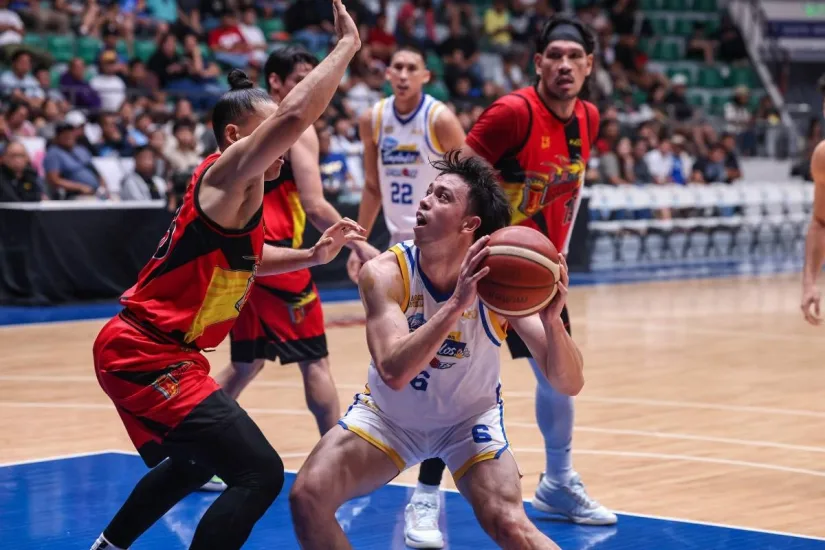

Magnolia Favored Over Struggling Blackwater
MAGNOLIA tries to get back on the winning track when it battles fast-fading Blackwater on Friday in the PBA Season 50 Philippine Cup at the Smart Araneta Coliseum in Quezon City.
The Hotshots are coming off a heartbreaking 94-92 loss to the San Miguel Beermen last week, but will try to erase the bitter taste of that defeat against the Bossing.
Game time is 5:15 p.m.
REDEMPTION TIME — Chris Koon and the Magnolia Hotshots try to bounce back from a 92-94 loss to San Miguel Beer last Friday when they take on the Blackwater Bossing on Nov. 14, 2024.
Magnolia enters the match tied at fifth place with Converge at 4-2. A win today will be big for rookie coach LA Tenorio’s squad as the Hotshots are eyeing a top 4 finish heading into the quarterfinals.
Blackwater, meanwhile, is in danger of missing the playoffs after losing five straight games since their season-opening win against Terrafirma.
Second Game: Ginebra vs Converge (7:30 p.m.)
Barangay Ginebra looks to build on its 30-point demolition of NLEX. Their previous game was postponed due to Super Typhoon Uwan.
Ginebra holds a 2-3 record after losses to top teams such as Magnolia, Meralco, and SMB. Converge aims to break into the top 4 led by Justin Araña, Justine Baltazar, Alec Stockton, Schonny Winston, and rookie Juan Gomez de Liano.
“We have to prepare and make sure we don’t rush our offense. We have to execute our plays in every possession,” — Coach Delta Pineda